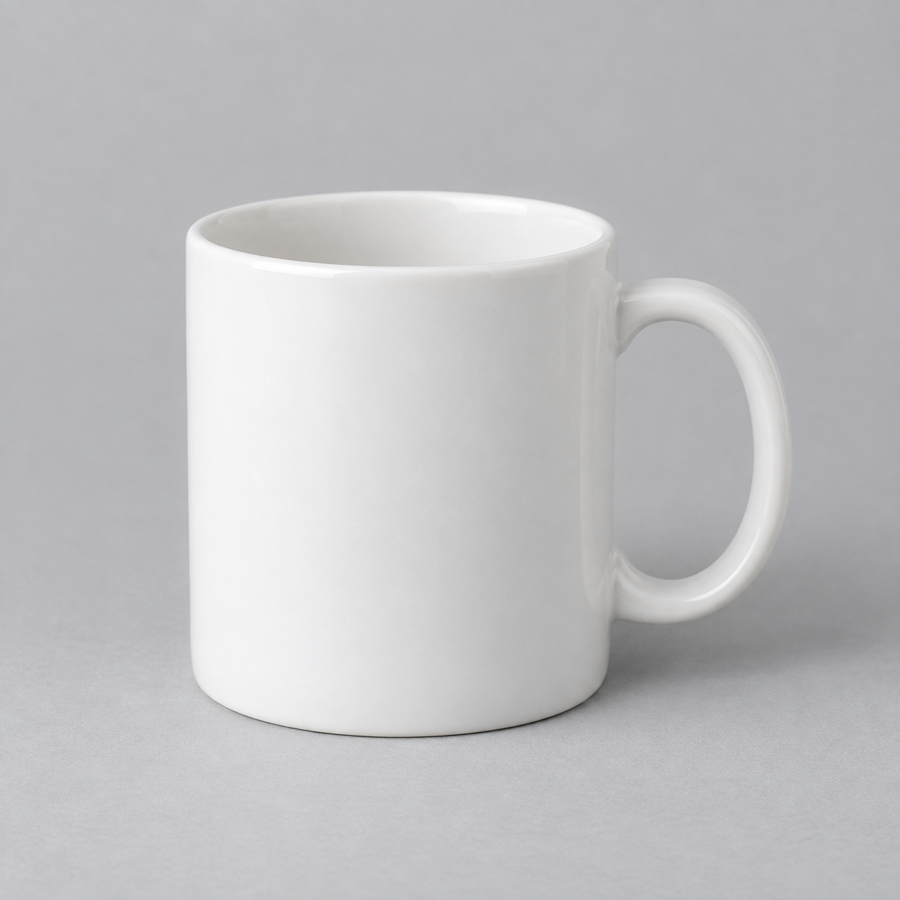

anchoring <- readr::read_csv("anchoring.csv", show_col_types = FALSE)単回帰モデル
アンカリングの模擬実験データで単回帰を実行・検証し、制限時間を加えた重回帰と比較します。別の実験データで、t検定・分散分析との対応も確かめます。
1 目的
このページでは、単回帰モデルを使って2つの変数の関係を調べ、結果の読み方を学びます。題材は、マグカップに支払ってもよい上限額が、先に見せられた金額によって変わるかを調べる架空の実験です。先に示された数値を手がかりに、その後の数値の判断がその方向へ寄る現象をアンカリングと呼び、手がかりになる数値をアンカーと呼びます。以下では、先に見せる金額を「アンカー金額」、上限額を「支払意思額」と呼びます。次の3つの分析を行います。
- 300人分のデータで、アンカー金額で支払意思額を説明する単回帰分析を行い、係数、p値、決定係数を読む。
- 同じデータで、回答の制限時間を説明変数に加えた重回帰分析を行い、単回帰の結果と比べる。
- アンカー金額を2通り、3通りに限定した別の実験データで、群の平均差を回帰で求め、t検定・分散分析の結果と対応することを確かめる。
単回帰と重回帰は、次の順に進めます。
- どの変数をどの変数で説明するか、どのような出力が欲しいかを決める。
- 決めた内容をAIに伝えて、Rコードを作ってもらう。
- 自分のPositronでコードを実行し、出力が決めた内容どおりかを確かめる。
- 係数や決定係数が何を表すかを説明する。
「第9節（t検定・分散分析との関係）」では、用意したコードを実行して、群平均と回帰係数、検定結果の対応を読みます。最後に「第10節（練習問題）」に取り組んでください。
2 準備
実験の設定
参加者全員に、同じブランド名のない白い陶器のマグカップの写真と、「容量約300mL、無地のマグカップです」という説明を示す実験を考えます。

次に、500〜3,000円の10円刻みの候補から無作為に選んだ金額を、アンカー金額として参加者に見せます。参加者には、商品の通常価格ではなく、実験のために無作為に選んだ金額だと伝えます。そのうえで、参加者は次の2つの質問に順に答えます。
- アンカー金額より高い金額を支払ってもよいと思うかを、「はい」か「いいえ」で答える。この質問に制限時間はない。
- このマグカップに支払ってもよい上限額を、10円刻みの金額で答える。この質問だけに制限時間があり、10〜60秒の整数から無作為に割り当てる。
アンカー金額と制限時間は、それぞれ独立に割り当てます。各参加者が見るアンカー金額は1つで、上限額の回答も1回です。分析に使うのは2番目の回答です。記録する制限時間は割り当てた秒数で、実際に回答にかかった時間ではありません。
この実験では、アンカー金額がアンカーとして働き、支払意思額がその方向へ寄るかを調べます。アンカリングを示した古典的な研究に、Tversky and Kahneman（1974）のJudgment under Uncertainty: Heuristics and Biases（英語）があります。今回のマグカップと制限時間の設定は、授業用に作ったものです。
回帰式の復習
単回帰モデルとは、ある変数から別の変数を説明するために、2つの変数の関係を直線で表すモデルです。説明に使う変数を「説明変数」、説明したい変数を「被説明変数」と呼びます。単回帰では、説明変数を1つ使います。
\[ y_i = \beta_0 + \beta_1 x_i + \varepsilon_i \]
この式の \(x_i\) がアンカー金額、\(y_i\) が支払意思額です。添字の \(i\) は、データの何人目かを表します。\(\beta_0\) は切片、\(\beta_1\) は傾きで、モデルで想定する直線からの個人ごとのずれを誤差項 \(\varepsilon_i\) で表します。
例えば、\(700 + 0.3 \times \text{アンカー金額}\) 円という直線なら、アンカー金額が100円高いと、直線上の支払意思額は30円高くなります。これは式の読み方を確認するための例です。実際の係数は、これからデータを使って求めます。
ファイルとRの準備
このページでは、tidyverseに含まれるreadr、ggplot2、dplyrを使います。readrはCSVの読み込み、ggplot2は作図、dplyrは比較の節での集計に使います。tidyverseをまだインストールしていない場合は、RとPositronのセットアップの「パッケージの導入」で手順を確認してください。
- anchoring.csvをダウンロードし、ファイル名を変えずに授業用フォルダに保存してください。アンカリングの模擬実験データで、1行が1人を表します。
- データの説明書anchoring_codebook.mdも同じフォルダに保存してください。実験の設定と変数の意味が書かれていて、Positronで開いて読めます。
- Positronで授業用フォルダを開き、Rスクリプトを作成してください。例えば、
simple-regression.Rという名前で保存します。操作はRとPositronのセットアップで確認できます。
模擬調査データの mock_survey.csv とは別のデータです。CSVには次の4列があり、どの変数も加工せずに分析に使えます。
| 列名 | 内容 | 単位・値 |
|---|---|---|
id |
架空の参加者番号 | 1〜300。分析の説明変数には使わない |
anchor_yen |
無作為に割り当てたアンカー金額 | 円。候補は500〜3,000の10円刻み |
time_limit_sec |
上限額の回答に割り当てた制限時間 | 秒。10〜60の整数 |
willingness_yen |
支払ってもよい上限額（支払意思額） | 円。0以上の10円刻み。今回のデータでは520〜2,150 |
CSVの読み込み
まず、CSVに保存された表をRに読み込み、anchoring という名前で保存します。Rで扱うこのような表を、データフレームと呼びます。
実行すると、読み込んだデータが anchoring に入ります。ファイルが見つからないというエラーが出た場合は、Positronのファイル一覧に anchoring.csv があるか、コードのファイル名と一致しているかを確認してください。見つからない場合は、セットアップの「CSVが見つからない」でRの作業フォルダも確認します。ここでは、確認するファイル名を anchoring.csv に読み替えてください。
続いて、読み込めたかを数値で確認します。dim() は行数と列数を表示します。is.na() は欠損値の位置を調べ、sum() でその個数を数えます。最初に 300 4、次に 0 と表示されることを確認してください。
dim(anchoring)[1] 300 4sum(is.na(anchoring))[1] 0summary() で各列の分布も確認しましょう。Min. は最小値、Max. は最大値です。アンカー金額の候補は500円からですが、この300人に実際に割り当てられた最小値は510円です。
summary(anchoring) id anchor_yen time_limit_sec willingness_yen
Min. : 1.00 Min. : 510 Min. :10.00 Min. : 520
1st Qu.: 75.75 1st Qu.:1060 1st Qu.:23.00 1st Qu.:1010
Median :150.50 Median :1695 Median :35.50 Median :1200
Mean :150.50 Mean :1740 Mean :35.59 Mean :1231
3rd Qu.:225.25 3rd Qu.:2460 3rd Qu.:48.00 3rd Qu.:1450
Max. :300.00 Max. :3000 Max. :60.00 Max. :2150 3 分析の仕様を言葉にする
このページで調べたいのは、次の問いです。
アンカー金額が高いほど、支払意思額も高いか。
AIに依頼する前に、誰を対象に、どの変数をどの変数で説明したいのかを整理しましょう。下の表が、AIに伝える分析の仕様になります。
| 項目 | 今回の仕様 |
|---|---|
| データ | 読み込んだ anchoring |
| 対象 | 全員300人 |
| 被説明変数 | willingness_yen（支払意思額、数値、今回のデータでは520〜2,150円） |
| 説明変数 | anchor_yen（アンカー金額、数値、500〜3,000円の候補から割付） |
| モデル | 切片を含む単回帰。支払意思額をアンカー金額に回帰する |
| 数値の出力 | summary() の結果と、分析に使った人数 |
| 図 | 横軸がアンカー金額、縦軸が支払意思額の散布図と回帰直線 |
ここでは制限時間を説明変数に入れません。後で制限時間を加え、結果を比べます。
4 AIへの指示例
AIには、上の表をもとにRコードを作ってもらいます。分析は、返ってきたコードを自分のPositronで実行して行います。AIには変数名や値の範囲などの説明だけを伝え、CSVや個々の回答は渡しません。
指示に含める内容を、目的ごとに確認しましょう。途中の例文を一つずつ送る必要はありません。説明を読んだ後、最後にまとめた全文をコピーして使ってください。
使うデータと変数を伝える
AIは、手元で何の準備が済んでいるかを知りません。まず、anchoring に読み込んだデータが入っていることを伝えます。続けて、人数、欠損の有無、使う列の意味と値の範囲を書きます。今回は必要な2列の説明を指示に含めるので、コードブックの添付は不要です。
データフレームanchoringは読み込み済みです。
全員300人を使い、欠損値はありません。
willingness_yenは支払意思額を表す数値で、今回のデータでは520〜2,150円です。
anchor_yenはアンカー金額で、500〜3,000円の候補から割り当てた数値です。モデルと数値の出力を指定する
「回帰分析をして」だけでは、どちらの変数を説明したいのかが伝わりません。被説明変数と説明変数を指定します。lm() は回帰モデルを推定する関数です。推定とは、データを使って切片や傾きの値を求めることです。
推定後の結果を読むため、summary() で係数などを、nobs() で分析に使った人数を表示するよう頼みます。
willingness_yenを被説明変数、anchor_yenだけを説明変数とし、
切片を含むモデルをlm()で推定してください。
summary()で結果を、nobs()で分析人数を表示してください。図を伝える
数値に加え、アンカー金額と支払意思額の散布図を頼みます。1人分の回答を1つの点で表し、回帰直線を重ねると、金額の関係と直線の周囲のばらつきを見られます。
ggplot2で、横軸をアンカー金額、縦軸を支払意思額にした散布図を描き、
同じ単回帰モデルの回帰直線を重ねてください。信頼帯は表示しません。
点が重なるので半透明にしてください。今回は点と直線の対応を見るため、直線の周囲に付く帯（信頼帯）は表示しないよう指定しています。
まとめた指示をAIに送る
下の全文をコピーして、利用するAIの入力欄に貼り付け、送信してください。最後に、元の単位と対象者を保つ指定と、コードの書き方を添えています。<- や |> の指定は参照コードと見比べやすくするためのもので、自分のコードを必ず同じ書き方にする必要はありません。
返ってきたコードをPositronのスクリプトに貼り、準備コードに続けて実行します。実行後は「第6節（検証チェックリスト）」と照らし合わせ、必要に応じて下の参照コードも開いてください。エラーが出たら、個人の回答データを含めず、エラーメッセージと該当するコードをAIに伝えて修正を依頼してください。
5 参照コードと出力
自分のコードを実行してから開き、結果を照合してください。オブジェクト名や関数の並べ方が違っていても、指定した対象とモデルが同じかを確かめます。
6 検証チェックリスト
このチェックリストは、指定どおりに分析できたかを確かめるものです。直線で表すことが適切かを点検する残差の図は、第11節（発展）で扱います。
数値は表示桁によって丸め方が変わります。大きく違う場合は、CSVのファイル名、対象者の絞り込み、回帰式を順に確かめます。例えば、AIのコードが2つの変数を標準化（平均0、標準偏差1にそろえる変換）していると、アンカー金額の係数は約0.716になります。この係数は、円単位の差としては読めません。
作図のコードでは、geom_smooth() の指定を確認します。
method = "lm"を省くと、回帰直線ではなく、点の並びに合わせて曲がる線を描きます。今回の300人のデータでは、Consoleに`geom_smooth()` using method = 'loess' and formula = 'y ~ x'と表示されます。この線はほぼ直線に見えることもあるため、線の形だけで判断しないでください。se = FALSEは、回帰直線の周囲の帯（信頼帯）を表示しない指定です。
7 結果の解釈
係数と回帰直線
Coefficients の Estimate 列に注目します。今回の回帰直線は、丸めると次の式です。金額の単位は円です。
\[ \widehat{\text{支払意思額}} = 732.347 + 0.287 \times \text{アンカー金額} \]
支払意思額の上の記号は、実際の回答額ではなく、推定した直線上の値であることを表します。アンカー金額が1円高いと、直線上の支払意思額が約0.287円高いという関係です。100円の違いなら約28.7円の差です。アンカー金額が1,000円のときの直線上の値は約1,019円、2,000円のときは約1,306円です。これらは丸める前の係数から計算しています。実際の回答額が全員この値になるわけではありません。
(Intercept) は、アンカー金額が0円のときの直線上の値です。ただし、今回は0円を提示した人はいません。切片は直線の位置を決める値として読み、0円を提示した場合の実測結果とは解釈しません。
アンカー金額を無作為に割り当てる実験は、アンカー金額による違いを検討するための設計です。ただし、このページの回答は模擬データです。この係数から、実在する人の判断への効果の大きさを結論づけることはできません。
p値と決定係数
Pr(>|t|) は、各係数が0という帰無仮説についてのp値です。アンカー金額の行では <2e-16 と表示されます。これは \(2 \times 10^{-16}\) より小さいという意味で、結果を報告するときは p < .001 と書きます。モデルの仮定の下で、係数0という仮説と今回の結果は整合しにくいと読みます。p値は、帰無仮説が正しい確率や、関連の大きさを表す値ではありません。
Multiple R-squared が決定係数R²で、今回は約0.513です。このモデルでは、今回の支払意思額のばらつきの約51.3%を説明しています。個々の人の回答額を51.3%の確率で当てる、という意味ではありません。分析人数は nobs(model_simple) の300人です。
8 制限時間を加えた重回帰
知りたいことと仕様の変更
同じアンカー金額でも、判断に使える時間が違えば、回答額に違いがあるかもしれません。制限時間が同じという条件で、アンカー金額と支払意思額の関係を調べたいとします。そのために、アンカー金額を残したまま、説明変数に制限時間を加えます。このように、説明変数を複数使う回帰分析を重回帰分析と呼びます。
| 項目 | 重回帰での仕様 |
|---|---|
| 対象と被説明変数 | 単回帰と同じ全員300人、willingness_yen |
| 説明変数 | anchor_yen と time_limit_sec（割り当てた制限時間、10〜60秒の整数） |
| モデル | 切片を含む重回帰。交互作用や二乗項は加えない |
| 欲しい出力 | summary() の結果と分析人数。単回帰とのアンカー金額の係数、R²の比較 |
第4節（AIへの指示例）の全文を自分で修正し、AIにこの分析を依頼してください。 制限時間を加えることに加え、元の説明変数も残すこと、同じ対象で比べることが伝わるか確かめます。散布図の指定は外し、重回帰の summary() の結果と分析人数を頼めば十分です。
確認と解釈
| モデル | アンカー金額の係数 | R² | 人数 |
|---|---|---|---|
| 単回帰 | 0.287 | 0.513 | 300 |
| 制限時間を加えた重回帰 | 0.290 | 0.577 | 300 |
重回帰のアンカー金額の係数は約0.290です。これは、制限時間が同じという条件で、アンカー金額が100円高いと、支払意思額が平均で約29.0円高いという意味です。制限時間の係数は、アンカー金額が同じという条件で、制限時間が1秒長いと支払意思額が平均で約5.37円低いと読みます。10秒の違いなら約53.7円の差です。
アンカー金額の係数は、制限時間を加えても大きく変わりませんでした。今回は2つの条件を独立に割り当てています。重回帰の目的は、アンカー金額の係数を大きく変えることではなく、それぞれの条件と回答額の関係を分けて読むことです。無作為割付でも、この300人のデータで両変数の相関が厳密に0になるわけではありません。
R²は約0.513から約0.577に増えました。制限時間を加えると、アンカー金額だけのモデルで残っていたばらつきの一部も説明できます。ただし、同じ対象と被説明変数を使う通常の回帰では、説明変数を追加するとR²は下がりません。上がったことだけで、その変数を加えるべきだとは判断せず、分析の目的に照らして考えます。
制限時間の負の係数は、この模擬データに設定した関連から得られたものです。実際に時間を長くすれば支払意思額が下がるという証拠にはなりません。また、今回のモデルでは、アンカー金額の傾きはどの制限時間でも同じと仮定しています。
ここまでの2つのモデルでは、連続的なアンカー金額と支払意思額の関係を読みました。次の節では、アンカー金額を2通り、3通りに限定した別の実験で、群の平均差を回帰で求めます。
9 t検定・分散分析との関係
この節では、AIに依頼せず、用意したコードをそのまま実行して、群平均と回帰係数、検定結果の対応を確かめます。
ここまでの実験とは別に、アンカー金額を2通り、3通りに限定した実験を考えます。参加者は各実験で別の人とし、各群100人になるよう無作為に割り当てます。マグカップと回答手続きは同じですが、制限時間は全員35秒に固定します。連続的なアンカー金額を後から区切った群ではありません。
2群のCSVと3群のCSVを、授業用フォルダに保存してください。変数の意味はデータの説明書でも確認できます。
2群の平均差とダミー変数
2群の実験では、アンカー金額が1,000円の群と2,500円の群を比べます。CSVの high_anchor は、1,000円群なら0、2,500円群なら1です。このように0と1で区分を表す変数をダミー変数といいます。ダミー変数の作り方はデータの前処理で扱っていますが、ここでは割り当てた条件の列をそのまま使います。
two_groups <- readr::read_csv("anchoring_two_groups.csv", show_col_types = FALSE)まず、人数と平均を確認します。group_by() で群に分け、summarise() で群ごとの集計値を求めます。dplyr::n() は群の人数、mean() は平均です。|> は左側の処理結果を次の関数に渡す記号です。
two_groups |>
dplyr::group_by(high_anchor) |>
dplyr::summarise(n = dplyr::n(), mean_willingness = mean(willingness_yen))# A tibble: 2 × 3
high_anchor n mean_willingness
<dbl> <int> <dbl>
1 0 100 1015.
2 1 100 1462.この0と1の変数を説明変数にして、支払意思額を回帰します。
model_dummy <- lm(willingness_yen ~ high_anchor, data = two_groups)
summary(model_dummy)
Call:
lm(formula = willingness_yen ~ high_anchor, data = two_groups)
Residuals:
Min 1Q Median 3Q Max
-532.5 -132.5 5.1 125.1 467.5
Coefficients:
Estimate Std. Error t value Pr(>|t|)
(Intercept) 1014.90 19.58 51.84 <2e-16 ***
high_anchor 447.60 27.69 16.17 <2e-16 ***
---
Signif. codes: 0 '***' 0.001 '**' 0.01 '*' 0.05 '.' 0.1 ' ' 1
Residual standard error: 195.8 on 198 degrees of freedom
Multiple R-squared: 0.569, Adjusted R-squared: 0.5668
F-statistic: 261.4 on 1 and 198 DF, p-value: < 2.2e-16回帰の係数は、先ほど求めた群平均と次のように対応します。
- 切片の1,014.9円：
high_anchor = 0、つまり1,000円群の平均。 high_anchorの係数447.6円：2,500円群の平均から1,000円群の平均を引いた値。- 切片と係数の和の1,462.5円：2,500円群の平均。
この係数は、アンカー金額1円あたりの差ではなく、2つの群の平均差です。
同じ人のデータで、等分散を仮定する2群のt検定を行います。回帰係数と差の向きをそろえるため、x に2,500円群、y に1,000円群の回答額を渡します。filter() は条件に合う行を選び、pull() は指定した列を取り出します。high_anchor == 1 は、high_anchor が1に等しいという条件です。== などの条件の書き方は、データの前処理の「残す行」の折りたたみで説明しています。
willingness_high <- two_groups |>
dplyr::filter(high_anchor == 1) |>
dplyr::pull(willingness_yen)
willingness_low <- two_groups |>
dplyr::filter(high_anchor == 0) |>
dplyr::pull(willingness_yen)
test_anchor <- t.test(x = willingness_high, y = willingness_low, var.equal = TRUE)
test_anchor
Two Sample t-test
data: willingness_high and willingness_low
t = 16.167, df = 198, p-value < 2.2e-16
alternative hypothesis: true difference in means is not equal to 0
95 percent confidence interval:
393.0017 502.1983
sample estimates:
mean of x mean of y
1462.5 1014.9 回帰の high_anchor の行とt検定を比べると、t値はどちらも約16.17、自由度は198で、p値も一致します（p < .001）。同じ対象について同じ平均差を検定しているためです。群を引く順序を逆にするとt値の符号も逆になりますが、両側検定のp値は変わりません。
3群の平均差と分散分析
次は、1,000円、1,750円、2,500円の3群を比べます。CSVの anchor_condition には、それぞれ A_low、B_middle、C_high が入っています。
three_groups <- readr::read_csv("anchoring_three_groups.csv", show_col_types = FALSE)まず、各群100人になっているかと、支払意思額の平均を確認します。
three_groups |>
dplyr::group_by(anchor_condition) |>
dplyr::summarise(n = dplyr::n(), mean_willingness = mean(willingness_yen))# A tibble: 3 × 3
anchor_condition n mean_willingness
<chr> <int> <dbl>
1 A_low 100 1014.
2 B_middle 100 1253.
3 C_high 100 1450.Rでカテゴリを扱うための型を「因子」、それぞれの区分を「水準」と呼びます。文字列の anchor_condition を lm() に入れると、Rは因子として扱います。今回はアルファベット順で最初の A_low が基準になります。基準以外の2群を表すダミー変数はRが内部で用意するので、自分で列を作る必要はありません。
model_groups <- lm(willingness_yen ~ anchor_condition, data = three_groups)
summary(model_groups)
Call:
lm(formula = willingness_yen ~ anchor_condition, data = three_groups)
Residuals:
Min 1Q Median 3Q Max
-613.1 -136.0 -10.2 137.6 796.4
Coefficients:
Estimate Std. Error t value Pr(>|t|)
(Intercept) 1013.60 20.75 48.84 < 2e-16 ***
anchor_conditionB_middle 239.50 29.35 8.16 9.61e-15 ***
anchor_conditionC_high 436.60 29.35 14.88 < 2e-16 ***
---
Signif. codes: 0 '***' 0.001 '**' 0.01 '*' 0.05 '.' 0.1 ' ' 1
Residual standard error: 207.5 on 297 degrees of freedom
Multiple R-squared: 0.4277, Adjusted R-squared: 0.4238
F-statistic: 111 on 2 and 297 DF, p-value: < 2.2e-16係数は、次のように群平均と対応します。
- 切片の1,013.6円：基準の1,000円群の平均。
anchor_conditionB_middleの239.5円：1,750円群と1,000円群の平均差。anchor_conditionC_highの436.6円：2,500円群と1,000円群の平均差。
ここではカテゴリを説明変数にしているので、金額に比例する直線関係は仮定していません。
同じデータで、一元配置分散分析を実行します。aov() は分散分析を行う関数で、モデルは回帰式と同じ書き方で指定します。
anova_groups <- aov(willingness_yen ~ anchor_condition, data = three_groups)
summary(anova_groups) Df Sum Sq Mean Sq F value Pr(>F)
anchor_condition 2 9560941 4780470 111 <2e-16 ***
Residuals 297 12793439 43076
---
Signif. codes: 0 '***' 0.001 '**' 0.01 '*' 0.05 '.' 0.1 ' ' 1回帰の出力末尾の F-statistic と、分散分析の anchor_condition 行の F value を比べてください。F値は約111.0、自由度は2と297で、p値も一致します（p < .001）。どちらも、3群の平均がすべて等しいという帰無仮説を検定しています。回帰の各係数についてのt検定とは、検定している仮説が異なります。
10 練習問題
制限時間だけで回帰する
最初の anchoring の全員300人を使い、支払意思額を制限時間だけに回帰してください。アンカー金額は説明変数に入れません。対象、変数、モデル、欲しい出力を表にまとめてから、AIにコードを依頼してください。
係数、p値、R²、分析人数を表示し、制限時間を横軸、支払意思額を縦軸にした散布図に回帰直線を重ねてください。
結果を説明する
前の問題の結果、第8節（制限時間を加えた重回帰）の比較表、第9節（t検定・分散分析との関係）の出力を使い、次の問いに答えてください。
- 前の問題のモデルで、制限時間が10秒長い場合の支払意思額の差を、単位を付けて説明してください。
- アンカー金額の係数0.287（単回帰）と0.290（重回帰）を、それぞれ説明してください。係数があまり変わらなくても、制限時間を加えて何を調べられるようになったでしょうか。R²にも触れて答えてください。
- 2群の実験の回帰で、
high_anchorの係数447.6円は何を表していますか。t検定の出力のどの値から同じ金額を求められるかも書いてください。 - 「アンカー金額を無作為に割り当て、有意な結果も得られたので、現実の買い物でもアンカー金額を100円上げれば支払意思額が29円上がると証明できた」と説明してよいでしょうか。
AIが出したコードを点検する
「アンカー金額を説明変数にしたモデルに制限時間を加え、同じ制限時間のもとでアンカー金額と支払意思額の関係を調べたい」と指示したところ、次のコードが返ってきたとします。
model_check <- lm(willingness_yen ~ time_limit_sec, data = anchoring)
summary(model_check)
nobs(model_check)エラーなく実行でき、人数も300人です。このコードは、どのようなモデルを推定していますか。仕様との違いを説明し、回帰式を修正してください。
11 発展（任意）
残差の図でモデルを点検する
残差とは、観測値から、データを使って推定した直線上の値を引いた値です。直線上の値は、当てはめ値とも呼びます。例えば、ある人のアンカー金額に対応する直線上の支払意思額が1,200円、観測値が1,500円なら、残差は300円です。横軸を当てはめ値、縦軸を残差にした散布図を描くと、当てはめ値によってずれ方に違いがないかを確かめられます。直線で表すことが適切かを考えるための手がかりになる図です。
第4節（AIへの指示例）の全文に、次の指定を加えて依頼してみてください。
さらに、横軸がこのモデルの当てはめ値、縦軸が残差の散布図を描き、
残差0の水平線を加えてください。点が重なるので半透明にしてください。残差の図では、当てはめ値の小さい側から大きい側へ、点の中心が曲がっていないか、縦方向の広がりが変わっていないかを見ます。今回の図では、大きな曲がりや、広がりが一方向に増える形は目立ちません。この図だけでモデルの仮定をすべて満たすとは判断できませんが、回帰を使うときに確認しておきたい図の一つです。
交互作用と結果を当てはめる範囲
「判断に使える時間が短いほど、アンカー金額に引っ張られやすいのか」は、今回の加法的な重回帰とは別の問いです。この問いには、制限時間によってアンカー金額の傾きが変わるモデル、つまり交互作用を考える必要があります。時間の係数が負であることだけでは、時間が短いほどアンカリングが強いとは言えません。今回の模擬データには、交互作用は設定していません。
今回の結果を誰に、どのような商品や状況まで当てはめたいかも考えてみてください。実際の実験を計画するなら、参加者の集め方、商品、回答手続きのどの部分を確かめる必要があるでしょうか。
最終更新: 2026-10-16